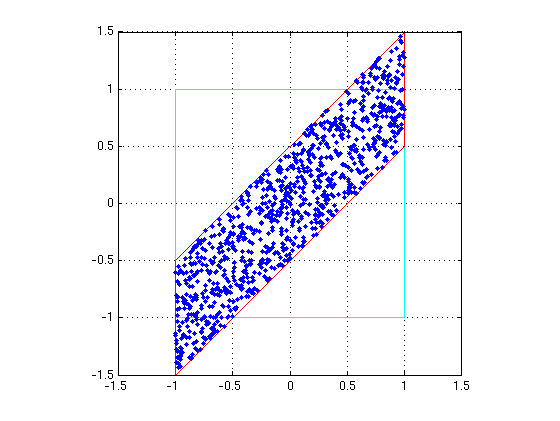
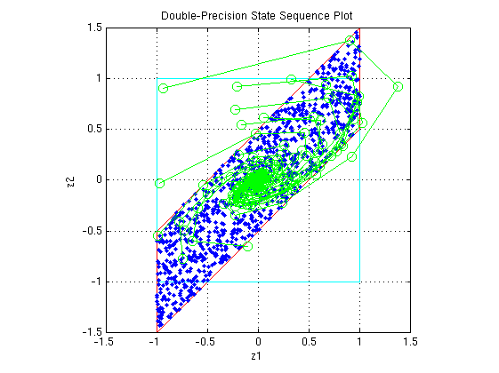
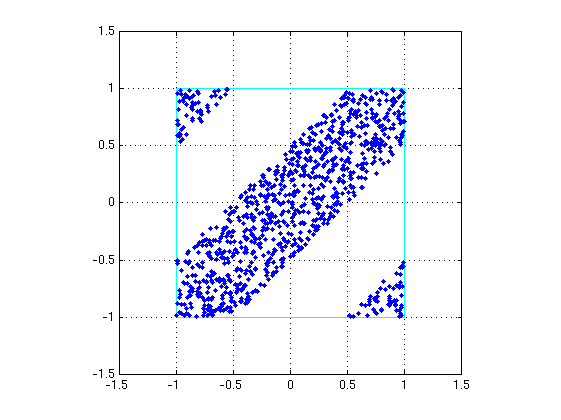
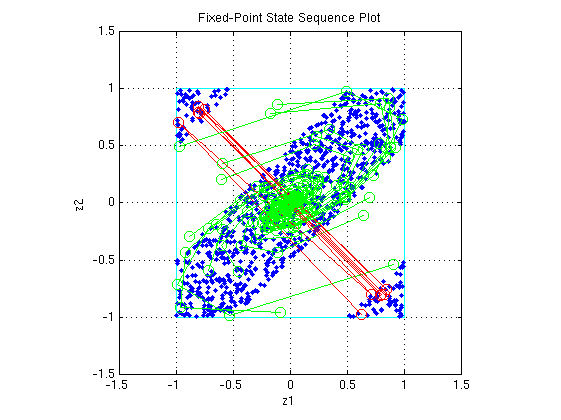
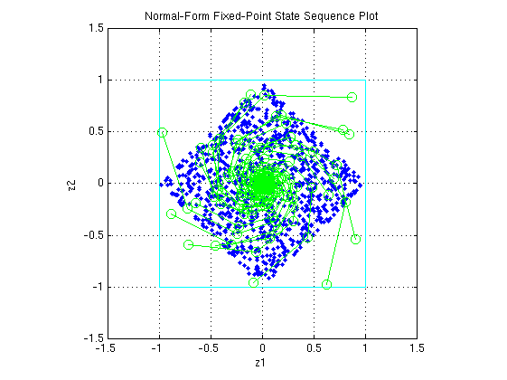

This is a demonstration of a limitcycle detection routine using the statespace representation for a second-order recursive system when implemented using finite precision.
The demonstration focuses on detecting large scale limitcycles due to overflow with zero inputs and highlights the conditions that are sufficient to prevent such oscillations.
References:
[1] Richard A. Roberts and Clifford T. Mullis, "Digital Signal Processing", Addison-Wesley, Reading, Massachusetts, 1987, ISBN 0-201-16350-0, Section 9.3.
[2] S. K. Mitra, "Digital Signal Processing: A Computer Based Approach", McGraw-Hill, New York, 1998, ISBN 0-07-042953-7.
We observe that the system is stable by observing that the eigenvalues of the state-transition matrix A have magnitudes less than 1.
format A = [0 1; -.5 1]; B = [0; 1]; C = [1 0]; D = 0; eig(A)
ans = 0.5000 + 0.5000i 0.5000 - 0.5000i
type fisisostatespacefilter.m
function [y,z] = fisisostatespacefilter(A,B,C,D,x,z) %FISISOSTATESPACEFILTER Single-input, single-output statespace filter % [Y,Zf] = FISISOSTATESPACEFILTER(A,B,C,D,X,Zi) filters data X with % initial conditions Zi with the state-space filter defined by matrices % A, B, C, D. Output Y and final conditions Zf are returned. % Copyright 2004 The MathWorks, Inc. % $Revision: 1.1.6.1 $ y = x; z(:,2:length(x)+1) = 0; for k=1:length(x) y(k) = C*z(:,k) + D*x(k); z(:,k+1) = A*z(:,k) + B*x(k); end
Create a floating-point filter and observe the trajectory of the states.
First, we choose random states within the unit square and observe where they are projected after one step of being multiplied by the state-transition matrix A.
rand('state',0); clf x1 = [-1 1 1 -1 -1]; y1 = [-1 -1 1 1 -1]; plot(x1,y1,'c') axis([-1.5 1.5 -1.5 1.5]); axis square; grid; hold on % Plot the projection of the square p = A*[x1;y1]; plot(p(1,:),p(2,:),'r') r = 2*rand(2,1000)-1; pr = A*r; plot(pr(1,:),pr(2,:),'.')
Drive the filter with a random initial state, normalized to be inside the unit square, with the input all zero, and run the filter.
Note that some of the states wander outside the unit square, and that they eventually wind down to the zero state at the origin, z=[0;0].
x = zeros(10,1); zi = [0;0]; q = quantizer([16 15]); for k=1:20 y = x; zi(:) = randquant(q,size(A,1),1); [y,zf] = fisisostatespacefilter(A,B,C,D,x,zi); plot(zf(1,:), zf(2,:),'go-','markersize',8); end title('Double-Precision State Sequence Plot'); xlabel('z1'); ylabel('z2')
Because the eigenvalues are less than one in magnitude, the system is stable, and all initial states wind down to the origin with zero input. However, the eigenvalues don't tell the whole story about the trajectory of the states, as in this example, where the states were projected outward first, before they start to contract.
The singular values of A give us a better indication of the overall state trajectory. The largest singular value is about 1.46, which indicates that states aligned with the corresponding singular vector will be projected away from the origin.
svd(A)
ans =
1.4604
0.3424
Create a fixed-point filter and check for limitcycles.
The M-code for the filter remains the same. It becomes a fixed-point filter because we drive it with fixed-point inputs.
For the sake of illustrating overflow oscillation, we are choosing product and sum data types that will overflow.
randn('state',0); F = fimath('OverflowMode','wrap',... 'ProductMode','SpecifyPrecision',... 'ProductWordLength',16,'ProductFractionLength',15,... 'SumMode','SpecifyPrecision',... 'SumWordLength',16,'SumFractionLength',15); A = fi(A,'fimath',F) B = fi(B,'fimath',F) C = fi(C,'fimath',F) D = fi(D,'fimath',F)
A =
0 1.0000
-0.5000 1.0000
DataType: Fixed
Scaling: BinaryPoint
Signed: true
WordLength: 16
FractionLength: 14
RoundMode: round
OverflowMode: wrap
ProductMode: SpecifyPrecision
ProductWordLength: 16
ProductFractionLength: 15
SumMode: SpecifyPrecision
SumWordLength: 16
SumFractionLength: 15
CastBeforeSum: true
B =
0
1
DataType: Fixed
Scaling: BinaryPoint
Signed: true
WordLength: 16
FractionLength: 14
RoundMode: round
OverflowMode: wrap
ProductMode: SpecifyPrecision
ProductWordLength: 16
ProductFractionLength: 15
SumMode: SpecifyPrecision
SumWordLength: 16
SumFractionLength: 15
CastBeforeSum: true
C =
1 0
DataType: Fixed
Scaling: BinaryPoint
Signed: true
WordLength: 16
FractionLength: 14
RoundMode: round
OverflowMode: wrap
ProductMode: SpecifyPrecision
ProductWordLength: 16
ProductFractionLength: 15
SumMode: SpecifyPrecision
SumWordLength: 16
SumFractionLength: 15
CastBeforeSum: true
D =
0
DataType: Fixed
Scaling: BinaryPoint
Signed: true
WordLength: 16
FractionLength: 15
RoundMode: round
OverflowMode: wrap
ProductMode: SpecifyPrecision
ProductWordLength: 16
ProductFractionLength: 15
SumMode: SpecifyPrecision
SumWordLength: 16
SumFractionLength: 15
CastBeforeSum: true
Again, we choose random states within the unit square and observe where they are projected after one step of being multiplied by the state-transition matrix A. The difference is that this time matrix A is fixed-point.
Note that the triangles that projected out of the square before in floating-point, are now wrapped back into the interior of the square.
clf r = 2*rand(2,1000)-1; pr = A*r; plot([-1 1 1 -1 -1],[-1 -1 1 1 -1],'c') axis([-1.5 1.5 -1.5 1.5]); axis square; grid; hold on plot(pr(1,:),pr(2,:),'.')
The only difference between this and the previous code is that we are driving it with fixed-point data types.
x = fi(zeros(10,1),1,16,15,'fimath',F); zi = fi([0;0],1,16,15,'fimath',F); q = assignmentquantizer(zi); e = double(eps(zi)); rand('state',0); for k=1:20 y = x; zi(:) = randquant(q,size(A,1),1); [y,zf] = fisisostatespacefilter(A,B,C,D,x,zi); if abs(double(zf(end)))>0.5, c='ro-'; else, c='go-'; end plot(zf(1,:), zf(2,:),c,'markersize',8); end title('Fixed-Point State Sequence Plot'); xlabel('z1'); ylabel('z2')
Trying this for other randomly chosen initial states illustrates that once a state enters one of the triangular regions, then it is projected into the other triangular region, and back and forth, and never escapes.
There are two sufficient conditions to prevent overflow limitcycles in a system:
Note that for the current representation, the second condition does not hold.
We now apply a similarity transformation to the original system that will create a normal state-transition matrix A2.
T = [-2 0;-1 1]; Tinv = [-.5 0;-.5 1]; A2 = Tinv*A*T; B2 = Tinv*B; C2 = C*T; D2 = D;
Similarity transformations preserve eigenvalues, as a result of which the system transfer function of the transformed system remains same as before. However, the transformed state transformation matrix A2 is normal.
Now the projection of random initial states inside the unit square all contract uniformly. This is the result of the state transition matrix A2 being normal. The states are also rotated by 90 degrees counterclockwise.
clf r = 2*rand(2,1000)-1; pr = A2*r; plot([-1 1 1 -1 -1],[-1 -1 1 1 -1],'c') axis([-1.5 1.5 -1.5 1.5]); axis square; grid; hold on plot(pr(1,:),pr(2,:),'.')

Plotting the state sequences again for the same initial states as before we see that the outputs now spiral towards the origin.
x = fi(zeros(10,1),1,16,15,'fimath',F); zi = fi([0;0],1,16,15,'fimath',F); q = assignmentquantizer(zi); e = double(eps(zi)); rand('state',0); for k=1:20 y = x; zi(:) = randquant(q,size(A,1),1); [y,zf] = fisisostatespacefilter(A2,B2,C2,D2,x,zi); if abs(double(zf(end)))>0.5, c='ro-'; else, c='go-'; end plot(zf(1,:), zf(2,:),c,'markersize',8); end title('Normal-Form Fixed-Point State Sequence Plot'); xlabel('z1'); ylabel('z2')
Trying this for other randomly chosen initial states illustrates that there is no region from which the filter is unable to recover.